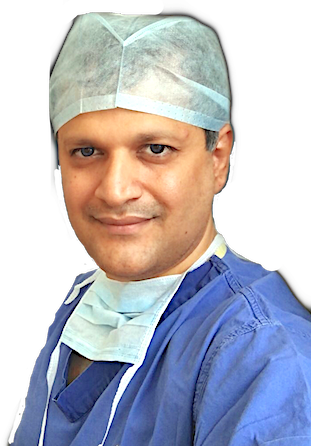

Dr Hrishikesh Sarkar
Clinical Researcher · Author · Coder · Innovator · Mentor · Patient Safety Advocate · Ushakiran Foundation
- MBBS — Christian Medical College, Vellore
- MCh (Neurosurgery) — CMC Vellore
- Fellowship, Minimally Invasive Neurosurgery — Switzerland
- Fellow, American College of Surgeons
- Fellow, Global Health Leadership — Harvard Medical School, Boston

Welcome to my website. I am a Senior Consultant Neurosurgeon (Brain & Spine Surgeon), researcher, innovator, author, and Harvard Global Healthcare Leadership Program alumnus, passionate about advancing neurosurgical care through clinical excellence, innovation, education, and technology.
This site is entirely self-coded from scratch. Explore it to learn about brain and spine conditions, treatment options, surgical outcomes, and life after neurosurgical procedures.
Thank you for visiting — please feel free to get in touch, I'd be happy to help.
Featured Videos
Where would you like to go?
Pioneering Surgeries
A selection of breakthrough surgeries and firsts.
- First in the world to describe and perform a novel keyhole Mini Supraorbital basal trans-isthmus approach to anterior insular lesions. The Hindu · NDTV · Publication
- Successfully removed the largest brain tumor ever operated via eyelid approach — a tennis-ball-sized meningioma in the anterior skull base. Video · Publication
- Pioneered DREZotomy for cancer-related pain in South India. Read more
- Implemented a rare, hybrid strategy to treat seven aneurysms in one patient — a first. Video
- First in India and South Asia to perform an "awake" brain bypass surgery for stroke.
- First in India to describe the utility of intraoperative CT scanning in enhancing precision and surgical safety in neurosurgery. Publication
- With colleagues in Switzerland, pioneered a novel keyhole approach to tumors located in the lateral ventricle. Publication
- First in the Indian subcontinent to assess serum S100 as a biomarker for diagnosing and prognosticating intracerebral bleeds. Publication
- With colleagues at CMC Vellore, developed the "Vellore Localizer," a simple tool for accurate shunt-tube placement. Publication
In the Press
National and international coverage of the world's first eyebrow keyhole approach for insular brain tumour.
Awareness & Advocacy — By the Patients
Real stories shared by patients and families.